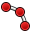
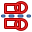

El entorno del Croquizador es utilizado para crear geometría 2D prevista para utilizar en el Entorno de Diseño de Pieza y en otros entornos.
Generalmente una geometría 2D se considera como el punto de partida en la mayoría de modelos de CAD - un simple croquis 2D se puede 'extruir' en una forma 3D, además los croquis 3D se pueden utiliza para hacer cajeras en la superficie o esta forma y croquis se pueden utilizar para definir 'salientes' (extrusiones) sobre la superficie de los objetos 3D. A través de las Operaciones Booleanas, el croquizador forma el corazón de la generación del diseño de formas sólidas.
El entorno del Croquizador proporciona restricciones - permitiendo a las formas 2D restringirse a definiciones geométricas precisas. Y un solucionador de restricciones que calcula las restricciones extendidas de geometría 2D y permite interactuar con la exploración de los grados de libertad del croquis.
Contents
Conceptos básicos de croquizado con restricciones
Para explicar como funciona el entorno de Croquizado, puede ser útil compararlo con el sistema de dibujo "tradicional".
Dibujo tradicional
El modo de dibujo tradicional es inherente a las antiguos mesas de dibujo. Las vistas (2D) ortogonales eran dibujadas manualmente y previstas para producir dibujos técnicos (también conocidos como planos detallados). Los objectos se dibujaban precisamente al tamaño o dimensión pretendida. Si querías dibujar una línea horizontal de longitud 100mm que comience en el (0,0), activabas la herramienta línea, pulsabas en la pantalla o introducías las coordenadas (0,0) para el primer punto, luego hacías un segundo clic o introducías las coordenadas del segundo punto en (100,0). O dibujabas la línea sin preocuparse de su posición, y la movías después. Cuando terminabas de dibujar geometría, le añadías cotas.
Croquizar con restricciones
El módulo de croquizado se aleja de esta lógica. Los objetos no tienen porque dibujarse exactamente como se pretenden, porque serán definidos después por restricciones geométricas y dimensionales. Los objetos se pueden dibujar sin excesivo rigor, y mientras estén sin restringir se pueden modificar. Están en realidad "flotando" y se pueden mover, estirar, girar, escalar, etc. Esto ofrece una gran flexibilidad en el proceso de diseño.
¿Qué son las restricciones?
Las restricciones se utilizan para limitar los grados de libertad de un objeto. Por ejemplo, una línea tiene 4 grados de libertad (en inglés Degrees Of Freedom, generalmente abreviado como " DOF "): Se puede mover horizontal o verticalmente, se puede estirar, y puede girarse.
Aplicando una restricción horizontal o vertical, o una restricción angular (relativa a otra línea o a uno de los ejes), se limitará su capacidad de girar, aunque seguirá con 3 grados de libertad. Bloqueando uno de sus extremos en relación con el origen eliminará otros 2 grados de libertad. Y aplicando una restricción dimensional se eliminará el último grado de libertad. La línea se considerará que está entonces completamente restringida.
Múltiples objetos pueden ser restringidos con respecto a otro. Dos líneas se pueden unir por uno de sus puntos con la restricción de coincidencia de puntos. Un ángulo se puede definir entre ellas, o se pueden establecer como perpendiculares. Una línea puede ser tangente a un arco o a una circunferencia, etc. Un Croquis complejo puede tener diferentes soluciones y restringir completamente significa encontrar una de esas posibles soluciones mediante el uso de restricciones.
Existen dos tipos de restricciones: geométricas y dimensionales. Ambas son explicadas en la sección #Las herramientas más abajo.
¿Para qué no es bueno el entorno de croquizado?
El Croquizador no está pensado para producir planos detallados en 2D. Una vez que los croquis se utilizan para generar un sólido, son automáticamente ocultados. Las cotas son sólo visibles en el modo de edición del croquis.
Si sólo necesitas producir vistas 2D para imprimir, y no quieres crear modelos 3D, mira el Entorno de Boceto (recuerda que el entorno de Boceto también puede ser útil para crear geometría 2D que no está disponible actualmente en el Croquizador.)
Modo de uso del Croquizado
Un croquis es siempre bidimensional (2D). Para crear un sólido, se crea un croquis con un perfil cerrado y posteriormente se extruye o se realiza una operación de revolución. De esta forma se añade la tercera dimensión y se crea un sólido tridimensional.
Si un croquis contiene segmentos que se cruzan, o regiones donde un punto no se encuentra exactamente sobre un segmento, o regiones donde hay espacios entre puntos finales de diferentes segmentos, las operaciones de extrusión o revolución fallarán y no será posible crear un sólido. Esta regla no se aplica a la geometría de construcción (representada en azul), que es geometría auxiliar que no forma parte de la definición del perfil.
Dentro de un perfil cerrado puede haber contenidos otros perfiles interiores que no se solapen, ni con el anterior, ni entre ellos. Al aplicar la operación tridimensional estos perfiles interiores constituirán huecos en la forma tridimensional.
Las herramientas
Las herramientas del entorno del Croquizador están ubicadas en el menú del Croquizador que se muestra al cargar el entorno del Croquizador.
Geometrías del croquizador
Estas son las herramientas para la creación de objetos.
-
 Punto: Dibuja un punto
Punto: Dibuja un punto - Línea por 2 puntos: Dibuja una línea dada por 2 puntos
-
 Arco: Dibuja un segmento de arco dada por el centro, radio, ángulo inicial y ángulo final
Arco: Dibuja un segmento de arco dada por el centro, radio, ángulo inicial y ángulo final -  Arco a través de 3 Puntos: Dibuja un segmento de arco entre dos puntos y un tercer punto que se haya en la circumferencia.
-
 Circunferencia: Dibuja una circunferencia dada por el centro y el radio
Circunferencia: Dibuja una circunferencia dada por el centro y el radio -
 Círcumferencia a través de 3 Puntos : Dibuja una circunferencia que pasa por tres puntos, dos puntos finales y uno intermedio.
Círcumferencia a través de 3 Puntos : Dibuja una circunferencia que pasa por tres puntos, dos puntos finales y uno intermedio. -
 Secciones Cónicas:
Secciones Cónicas:
-
 Elipse definida por su centro : Dibuja una elipse dado su punto central, un segundo punto definiendo el extremo del radio mayor y un tercer punto definiendo el extremo del radio menor.(v0.15)
Elipse definida por su centro : Dibuja una elipse dado su punto central, un segundo punto definiendo el extremo del radio mayor y un tercer punto definiendo el extremo del radio menor.(v0.15) -
 Elipse a través de 3 puntos : Dibuja una elipse definiendo los dos extremos de su radio mayor y un punto definiendo su radio menor.(v0.15)
Elipse a través de 3 puntos : Dibuja una elipse definiendo los dos extremos de su radio mayor y un punto definiendo su radio menor.(v0.15) -
 Arco elíptico : Dibuja un arco elíptico definido por punto central, un punto definiendo el extremo del radio mayor y dos puntos definiendo los extremos del arco elíptico.(v0.15)
Arco elíptico : Dibuja un arco elíptico definido por punto central, un punto definiendo el extremo del radio mayor y dos puntos definiendo los extremos del arco elíptico.(v0.15)  Arco hiperbólico: Dibuja un arco hiperbólico. (v0.17)
Arco hiperbólico: Dibuja un arco hiperbólico. (v0.17) Arco parabólico: Dibuja un arco parabólico. (v0.17)
Arco parabólico: Dibuja un arco parabólico. (v0.17)
-
-
 Polilínea (línea de múltiples puntos): Dibuja una línea creada por múltiples segmentos de línea. Presionando la tecla M se puede iterar entre los diferents modos.
Polilínea (línea de múltiples puntos): Dibuja una línea creada por múltiples segmentos de línea. Presionando la tecla M se puede iterar entre los diferents modos. -
 Rectángulo: Dibuja un rectángulo dado por 2 puntos opuestos
Rectángulo: Dibuja un rectángulo dado por 2 puntos opuestos -
 Triángulo: Dibuja un triángulo regular inscrito en una circumferencia en modo construcción. (v0.15)
Triángulo: Dibuja un triángulo regular inscrito en una circumferencia en modo construcción. (v0.15) -
 Cuadrado: Dibuja un cuadrado regular inscrito en una circumferencia en modo construcción. (v0.15)
Cuadrado: Dibuja un cuadrado regular inscrito en una circumferencia en modo construcción. (v0.15) -
 Pentagon: Dibuja un pentágono regular inscrito en una circumferencia en modo construcción. (v0.15)
Pentagon: Dibuja un pentágono regular inscrito en una circumferencia en modo construcción. (v0.15) -
 Hexagon: Dibuja un hexágono regular inscrito en una circumferencia en modo construcción. (v0.15)
Hexagon: Dibuja un hexágono regular inscrito en una circumferencia en modo construcción. (v0.15) -
 Heptagon: Dibuja un heptágono regular inscrito en una circumferencia en modo construcción. (v0.15)
Heptagon: Dibuja un heptágono regular inscrito en una circumferencia en modo construcción. (v0.15) -
 Octagon: Dibuja un octágono regular inscrito en una circumferencia en modo construcción. (v0.15)
Octagon: Dibuja un octágono regular inscrito en una circumferencia en modo construcción. (v0.15) -
 Óvalo: Dibuja un óvalo seleccionando el centro de una semicircumferencia y el punto final de la otra circumferencia.
Óvalo: Dibuja un óvalo seleccionando el centro de una semicircumferencia y el punto final de la otra circumferencia. -
 Redondeo: Crea un redondeo entre dos líneas unidas en un punto. Selecciona ambas líneas o haz clic en el punto de unión, luego activa la herramienta.
Redondeo: Crea un redondeo entre dos líneas unidas en un punto. Selecciona ambas líneas o haz clic en el punto de unión, luego activa la herramienta. -
 Recortar: Recorta una línea, circunferencia o arco con respecto al punto designado.
Recortar: Recorta una línea, circunferencia o arco con respecto al punto designado. -
 Geometría externa: Crea una arista enlazada a geometría externa.
Geometría externa: Crea una arista enlazada a geometría externa. -
 Modo de construcción: Un objeto de construcción no será utilizado en la operación de geometría 3D. Sólo es visible cuando se edita el Croquis que lo contiene. Si se activa el comando cuando existe una geometría seleccionada, esta herramienta cambia la geometría de construcción a normal y vice versa. Si se activa el comando sin haber una geometría seleccionada, entonces cambia el modo de creación, de forma que la subsecuentes geometrías introducidas serán creadas en dicho modo.
Modo de construcción: Un objeto de construcción no será utilizado en la operación de geometría 3D. Sólo es visible cuando se edita el Croquis que lo contiene. Si se activa el comando cuando existe una geometría seleccionada, esta herramienta cambia la geometría de construcción a normal y vice versa. Si se activa el comando sin haber una geometría seleccionada, entonces cambia el modo de creación, de forma que la subsecuentes geometrías introducidas serán creadas en dicho modo.
{kind=link}
{kind=link}
Sketcher Constraints
Las restricciones son utilizadas para establecer reglas entre los elementos del croquis, y para bloquear el croquis a lo largo de los ejes verticales y horizontales. Algunas restricciones crean restricciones auxiliares adicionales Restricciones auxiliares
No asociadas a un valor numérico
-
 Coincidente: Crea una restricción coincidente (punto a punto) entre los dos puntos seleccionados.
Coincidente: Crea una restricción coincidente (punto a punto) entre los dos puntos seleccionados. -
 Punto sobre objeto: Crea una restricción de punto sobre objeto en los elementos seleccionados.
Punto sobre objeto: Crea una restricción de punto sobre objeto en los elementos seleccionados. -
 Vertical: Crea una restricción vertical para las líneas seleccionadas o elementos de polilíneas. Se puede seleccionar más de un elemento.
Vertical: Crea una restricción vertical para las líneas seleccionadas o elementos de polilíneas. Se puede seleccionar más de un elemento. -
 Horizontal: Crea una restricción horizontal para las líneas seleccionadas o elementos de polilíneas. Se puede seleccionar más de un elemento.
Horizontal: Crea una restricción horizontal para las líneas seleccionadas o elementos de polilíneas. Se puede seleccionar más de un elemento. -
 Paralelo: Crea una restricción de paralelismo entre dos líneas seleccionadas.
Paralelo: Crea una restricción de paralelismo entre dos líneas seleccionadas. -
 Perpendicular: Crea una restricción de perpendicularidad entre las dos líneas seleccionadas.
Perpendicular: Crea una restricción de perpendicularidad entre las dos líneas seleccionadas. -
 Tangencia: Crea una restricción de tangencia entre las dos entidades seleccionadas, o una restricción colineal entre dos segmentos de línea.
Tangencia: Crea una restricción de tangencia entre las dos entidades seleccionadas, o una restricción colineal entre dos segmentos de línea. -
 Igual longitud: Crea una restricción de igual longitud entre las dos entidades seleccionadas. Si se utiliza en circunferencias o arcos, el radio se establecerá igual.
Igual longitud: Crea una restricción de igual longitud entre las dos entidades seleccionadas. Si se utiliza en circunferencias o arcos, el radio se establecerá igual. -
 Simetría: Crea una restricción de simetría entre dos puntos con respecto a una línea.
Simetría: Crea una restricción de simetría entre dos puntos con respecto a una línea. -
 Restricción de fijación: Fija una geometría en el lugar que ocupa en el momento de restringirla. Es especialmente útil para retringir B-splines. See https://forum.freecadweb.org/viewtopic.php?f=9&t=26572 (v0.17)
Restricción de fijación: Fija una geometría en el lugar que ocupa en el momento de restringirla. Es especialmente útil para retringir B-splines. See https://forum.freecadweb.org/viewtopic.php?f=9&t=26572 (v0.17)
Asociadas a un valor numérico
Con estas restricciones se pueden utilizar expresiones. El valor numérico puede importarse de una hoja de cálculo.
-
 Bloquear: Crea una restricción de bloqueo en los elementos seleccionados estableciendo cotas horizontales y verticales respecto al origen (las cotas pueden ser editadas después).
Bloquear: Crea una restricción de bloqueo en los elementos seleccionados estableciendo cotas horizontales y verticales respecto al origen (las cotas pueden ser editadas después). -
 Distancia Horizontal: Fija la distancia horizontal entre dos puntos o puntos finales de líneas. Si solo se selecciona uno, la distancia se define respecto al origen.
Distancia Horizontal: Fija la distancia horizontal entre dos puntos o puntos finales de líneas. Si solo se selecciona uno, la distancia se define respecto al origen. -
 Distancia Vertical: Fija la distancia vertical entre dos puntos o puntos finales de líneas. Si solo se selecciona uno, la distancia se define respecto al origen.
Distancia Vertical: Fija la distancia vertical entre dos puntos o puntos finales de líneas. Si solo se selecciona uno, la distancia se define respecto al origen. -
 Longitud: Crea una restricción de longitud en la línea seleccionada.
Longitud: Crea una restricción de longitud en la línea seleccionada. -
 Radio: Crea una restricción de radio en un arco o circunferencia seleccionado.
Radio: Crea una restricción de radio en un arco o circunferencia seleccionado. -
 Ángulo interno: Crea una restricción de ángulo interno entre las dos líneas seleccionadas.
Ángulo interno: Crea una restricción de ángulo interno entre las dos líneas seleccionadas. -
 Ley de Snell: Crea una restricción sobre dos líneas de forma que obedezca la ley de refracción. Permite simular rayos de luz a través de un material de un determinado índice de refracción.(v 0.15)
Ley de Snell: Crea una restricción sobre dos líneas de forma que obedezca la ley de refracción. Permite simular rayos de luz a través de un material de un determinado índice de refracción.(v 0.15) -
 Alineamiento Interno: Es una restricción que permite alinear elementos geométricos con una zona de una forma geométrica compleja. Por ejemplo, permite que una línea quede restringida a la posición del eje mayor de una elipse. Generalmente no se introduce manualmente, sino que se crea automáticamente al crear una forma compleja, como por ejemplo una elipse, a fin de permitir restringir paramétricamente la misma.
Alineamiento Interno: Es una restricción que permite alinear elementos geométricos con una zona de una forma geométrica compleja. Por ejemplo, permite que una línea quede restringida a la posición del eje mayor de una elipse. Generalmente no se introduce manualmente, sino que se crea automáticamente al crear una forma compleja, como por ejemplo una elipse, a fin de permitir restringir paramétricamente la misma.
-
 Modo de restricción: Una restricción en modo referencia no restringe, simplemente indica el valor numérico asociado a ella si estuviese restringiendo. Si se activa con restricciones seleccionadas, cambia dichas restricciones entre referencia y normales. Si se activa sin restricciones seleccionadas, cambia el modo de creación de restricciones entre referencia y normales. (v0.16)
Modo de restricción: Una restricción en modo referencia no restringe, simplemente indica el valor numérico asociado a ella si estuviese restringiendo. Si se activa con restricciones seleccionadas, cambia dichas restricciones entre referencia y normales. Si se activa sin restricciones seleccionadas, cambia el modo de creación de restricciones entre referencia y normales. (v0.16)
Otros
-
 Nuevo croquis: Crea un nuevo croquis en la cara o plano seleccionado. Si no se seleciona una cara, la herramienta permite seleccionar un plano básico.
Nuevo croquis: Crea un nuevo croquis en la cara o plano seleccionado. Si no se seleciona una cara, la herramienta permite seleccionar un plano básico.
-
 Editar croquis: Edita el croquis seleccionado.
Editar croquis: Edita el croquis seleccionado.
-
 Abandonar el croquis: Abandona el modo de edición del croquis.
Abandonar el croquis: Abandona el modo de edición del croquis.
-
 Vista de croquis: Cambia la vista para hacerla perpendicular al croquis.
Vista de croquis: Cambia la vista para hacerla perpendicular al croquis.
-
 Fijar croquis a cara: Fijar croquis a una cara de un sólido previamente seleccionada.
Fijar croquis a cara: Fijar croquis a una cara de un sólido previamente seleccionada.
- Reorientar croquis: Permite cambiar la posición y orientación de un croquis.
- Validate sketch: Permite comprobar tolerancias entre puntos y detectar problemas con restricciones.
-
 Fusionar: Fusiona dos o más croquis (v 0.15)
Fusionar: Fusiona dos o más croquis (v 0.15)
-  Simetría de croquis: Crea un nuevo sketch simétrico con respecto al eje x, al eje y, o al origen del sketch (v 0.16)
{kind=link}
-
 Cerrar forma: Crea una forma cerrada creando una restricción entre puntos finales (v 0.15)
Cerrar forma: Crea una forma cerrada creando una restricción entre puntos finales (v 0.15)
-
 Conectar segmentos: Conecta elementos del un croquis aplicando restricciones de coincidencia en los puntos finales (v 0.15)
Conectar segmentos: Conecta elementos del un croquis aplicando restricciones de coincidencia en los puntos finales (v 0.15)
-
 Seleccionar restricciones: Selecciona las restricciones impuestas sobre una geometría del croquis seleccionada (v 0.15)
Seleccionar restricciones: Selecciona las restricciones impuestas sobre una geometría del croquis seleccionada (v 0.15)
-
 Seleccionar el origen: Selecciona el origen del croquis (v 0.15)
Seleccionar el origen: Selecciona el origen del croquis (v 0.15)
-
 Seleccionar el eje vertical: Selecciona el eje vertical del croquis (v 0.15)
Seleccionar el eje vertical: Selecciona el eje vertical del croquis (v 0.15)
-
 Seleccionar el eje horizontal: Selecciona el eje horizontal del croquis (v 0.15)
Seleccionar el eje horizontal: Selecciona el eje horizontal del croquis (v 0.15)
-
 Seleccionar restricciones redundantes: Selecciona las restricciones redundantes del croquis (v 0.15)
Seleccionar restricciones redundantes: Selecciona las restricciones redundantes del croquis (v 0.15)
-
 Seleccionar restricciones conflictivas: Selecciona las restricciones conflictivas del croquis (v 0.15)
Seleccionar restricciones conflictivas: Selecciona las restricciones conflictivas del croquis (v 0.15)
-
 Seleccionar elementos asociados con restricciones: Selecciona elementos del croquis asociados con las restricciones seleccionadas (v 0.15)
Seleccionar elementos asociados con restricciones: Selecciona elementos del croquis asociados con las restricciones seleccionadas (v 0.15)
-
 Mostrar/ocultar geometría internal: Itera entre la regeneración de la geometría interna de una forma compleja y la ocultación de la geometría interna no utilizada. Se applica a cualquier geometría compleja (i.e. Secciones cónicas y b-splines) (v 0.15)
Mostrar/ocultar geometría internal: Itera entre la regeneración de la geometría interna de una forma compleja y la ocultación de la geometría interna no utilizada. Se applica a cualquier geometría compleja (i.e. Secciones cónicas y b-splines) (v 0.15)
-
 Symmetría: Copia un elemento del croquis manteniéndolo simétrico a una línea seleccionada (v 0.16)
Symmetría: Copia un elemento del croquis manteniéndolo simétrico a una línea seleccionada (v 0.16)
-
 Clonar: Clona un elemento del croquis (v 0.16)
Clonar: Clona un elemento del croquis (v 0.16)
-
 Copiar: Copia un elemento del croquis (v 0.16)
Copiar: Copia un elemento del croquis (v 0.16)
-
 Patrón rectangular: Crea un patrón rectangular de los elementos seleccionados (v 0.16)
Patrón rectangular: Crea un patrón rectangular de los elementos seleccionados (v 0.16)
-
 Cambiar a espacio virtual: Permite mover restricciones a otro espacio virtual. Mateniendo la visualición en un determinado espacio, el efecto es que permite ocultar las restricciones y volver a hacerlas visibles. See https://forum.freecadweb.org/viewtopic.php?f=9&t=26614 (v 0.17)
Cambiar a espacio virtual: Permite mover restricciones a otro espacio virtual. Mateniendo la visualición en un determinado espacio, el efecto es que permite ocultar las restricciones y volver a hacerlas visibles. See https://forum.freecadweb.org/viewtopic.php?f=9&t=26614 (v 0.17)
Preferencias
-
 Preferencias...: Preferencias disponibles en el croquizador.
Preferencias...: Preferencias disponibles en el croquizador.
Buenas practicas
Cada usuario de CAD desarrolla su propio modo de trabajar con el tiempo, pero hay algunos principios generales que conviene seguir.
- Una serie de croquis simples es más sencilla de manejar que un croquis complejo. Por ejemplo, un primer croquis se puede crear para la operación base 3D (ya sea un saliente o una revolución), mientras una segunda puede contener taladros o cajeras. Algunos detalles se pueden dejar fuera, para realizar luego como operaciones 3D. Puedes elegir evitar los redondeos en tu croquis si son muchos, y añadirlos como una operación 3D.
- Crea siempre un perfil cerrado, o tu croquis no producirá un sólido, sino un conjunto de caras abiertas. Si no quieres que alguno de los objetos sea incluido en la creación del sólido, cámbialos a elementos de construcción con la herramienta de Modo de Contrucción.
- Utiliza las restricciones automáticas para limitar el número de restricciones que tendrás que añadir manualmente.
- Como regla general, aplica las restricciones geométricas primero, luego las restricciones dimensionales, y bloquea tu croquis al final. Pero recuerda: Las reglas se hacen para romperlas. Si tienes problemas manipulando tu croquis, puede ser útil restringir algunos objetos antes de completar el perfil.
- Si es posible, centra tu croquis en el origen (0,0) con la restricción de bloqueo. Si tu croquis no es simétrico, ubica uno de sus puntos en el origen, o selecciona un buen número para las distancias de bloqueo. En la v0.12, las restricciones externas (restringiendo el croquis con respecto a geometría 3D como aristas u otros croquis) no están implementada. Esto significa q2ue para ubicar las siguientes geometrías de croquis a tu primer croquis, necesitaras definir distancias relativas a tu primer croquis manualmente. Una restricción de bloqueo de (25,75) desde el origen es más fácil de recordar que (23.47,73.02).
- Si tienes la posibilidad de seleccionar entre la Restricción Distancia y las restricciones de Distancia Vertical o Distancia Horizontal, es mejor que utilices las últimas pues se comportan mejor a nivel de consumo de memoria.
- En general, las mejores restricciones a utilizar son: Restricciones horizontales/verticales; Restricciones de distancia horizontal o vertical y tangencia en puntos finales. De ser posible, conviene limitar el uso de: Restricciones de Distancia; tangencia entre aristas; Punto en Objeto y simetría.